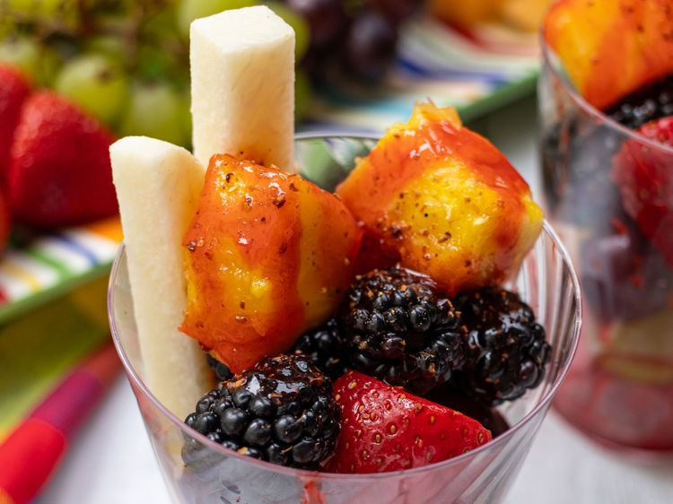

Vasos de Fruta (Mexican Fruit Cups)

Description
These vasos de fruta, or Mexican fruit cups are fruity, spicy, crunchy, and delicious. Fresh fruits are layered
in a glass, seasoned with spicy chili, and easy to enjoy anywhere.
Ingredients
- 2 bite-sized chunks watermelon, or more to taste
- 2 bite-sized chunks cantaloupe, or more to taste
- 4 green grapes
- 4 red grapes
- 2 strawberries
- 4 blackberries
- 2 chunks pineapple
- 2 sticks jicama, or more to taste
- 1 teaspoon chamoy sauce, or more to taste
- 1 teaspoon Tajin seasoning, or more to taste
Directions
- Preheat an outdoor grill for high heat and lightly oil grateLayer fruits in a tall glass or glass jar in
this order: watermelon, cantaloupe, green grapes, red grapes, strawberries, blackberries, and pineapple. Add
the jicama sticks into the top of the glass.
- Drizzle with chamoy, and sprinkle with Tajin seasoning.
Home